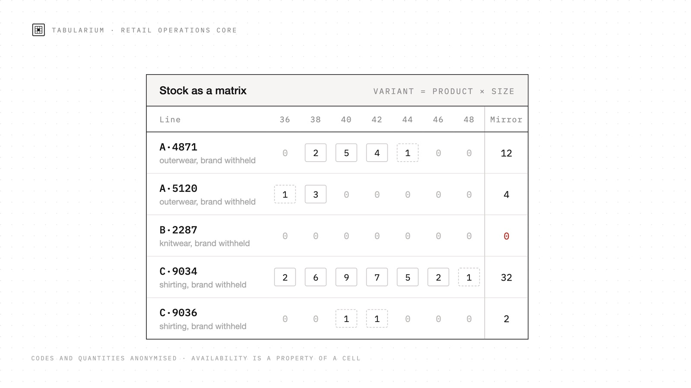

Viacheslav
Munister
I turn research questions into working digital systems.
Applied work across editorial research, operational data, learning tools and industrial computing: from method and interface to deployment and maintenance.
Applied systems practice
Selected live systems, each organised around a concrete research or operational problem, a data model and a maintainable delivery path.

EPRIS Museum
Public-domain painting drawn from the Art Institute of Chicago over IIIF and hung as a route through four centuries. The hang is an argument rather than an alphabet: each hall carries its own wall length and date span, and every work keeps its author, date and collection of origin. The building itself is written as geometry instead of imported as a model, so a hall is a stable address you can cite.

Tabularium
An operations core for a clothing retailer, written up in full without naming the client. Under the retail vocabulary sit three problems with names of their own: schema matching, deterministic record linkage, and a materialised aggregate kept correct under three concurrent writers. The write-up states the import as an algorithm with the cost of every step, lists the invariants beside the mechanism that holds each one, and then goes down to the statements themselves: what a supplier snapshot says about the articles it does not mention, and why an undo has to be a forward operation with a precondition.

TeachEd
A language-teaching workspace that converts planning materials, video and vocabulary into structured classroom objects. A lesson is an editable sequence of tasks, constraints and outputs rather than a static worksheet: boards, generated worksheets, YouTube turned into class material and more than thirty classroom games share one data model, so material composed once can be revised, shared and re-run online or on paper. I lead the product model, architecture and release process.

Italy Chapter
A bilingual digital-humanities study of Italy’s visual language in proportion, light and material. The interface works as an argument: an atlas, a timeline and controlled side-by-side comparisons make the evidence inspectable rather than leaving it as atmosphere. Research, editorial structure, visual system and implementation are developed as one method.

EPRIS Journal
An independent journal used as a testbed for durable cultural publishing. Its infrastructure models articles, objects, translations and media as linked editorial records, then carries them through validation, review, publication and deployment. The resulting digital passport is not a decorative archive: it establishes provenance, re-use paths and a workable research layer around each publication.

Winnipeg Nights
A night station built as a study in low-friction live audio. One source distributes sound over WebRTC to many listeners, who never grant microphone access; session state is coordinated through a polling data layer instead of a dedicated signalling service, so the architecture stays inspectable on modest infrastructure. Around the live hour sit a self-refreshing North American true-crime feed and on-the-fly speech translation, both running on the same single-core host.

Museum of Donetsk Photography
A photographic museum of a city that can now only be walked through in pictures. Over four hundred images are gathered, de-duplicated and passported through a three-stage pipeline, then hung across eight halls, including one built from freely licensed work by other photographers. Readers can submit their own frames: intake, size limits and re-encoding are handled by a separate service, so the archive grows without opening the site to unchecked uploads.
Applied systems and prototypes
Five further implementations. Each addresses a specific operational constraint through data modelling, computational logic or infrastructure design.
How these are built
Ten of the systems above, written up properly, and one that cannot be named: the data model, the pipeline drawn step by step, and the failure that changed the design.
Each write-up answers the same three questions. What is this actually for? What shape is the data underneath it? And what went wrong badly enough to be worth telling someone about? The diagrams carry the argument, every step and branch and dead end drawn as it runs, and the prose explains why the arrows go that way.
Research
29 peer-reviewed papers, 2021 to 2026, primarily in Scopus-indexed proceedings. The research informs the practical work above rather than sitting beside it.
Applied research in industrial automation and measurement: edge and fog computing, machine learning in production processes, information and measurement systems. The recurring concern is operational decision-making under real constraints: delayed data, limited compute, measurement error, energy use and the need to explain a control decision after it has been made.
Writing
Essays, criticism and interviews in EPRIS Journal. Twelve pieces, newest first.
 September 8, 2026
September 8, 2026
Built to a Score: Three Buildings Where Music Wrote the Architecture
Essay · Architecture · Music Sep 7, 2026
Sep 7, 2026
The Seam That Isn't There: Anish Kapoor's Cloud Gate
Essay · Sculpture · Anish Kapoor Sep 5, 2026
Sep 5, 2026
Neobarocco: Five Buildings That Confess What They Want You to Believe
Essay · Architecture · Baroque SEP 5, 2026
SEP 5, 2026
Dinner Inside an Advertisement
Review · Le Train Bleu · Gare de Lyon, Paris · Marius Toudoire Aug 31, 2026
Aug 31, 2026
Where the Warmth Lives: How Two Traditions Measured the Turn from Summer to Autumn
Essay · Painting · Light- 01En Quête de Patrimoine
- 02Histoire dʼen Parler
French associations researching and keeping cultural heritage close to lived places and public conversation.
A good archive does not close the past. It lets a detail catch the light, and gives someone else a way in.
Place / object / memory / interfaceSystems analysis and architecture, operational data models, editorial research infrastructure, ERP, IIoT and edge computing, machine learning and interface prototyping.